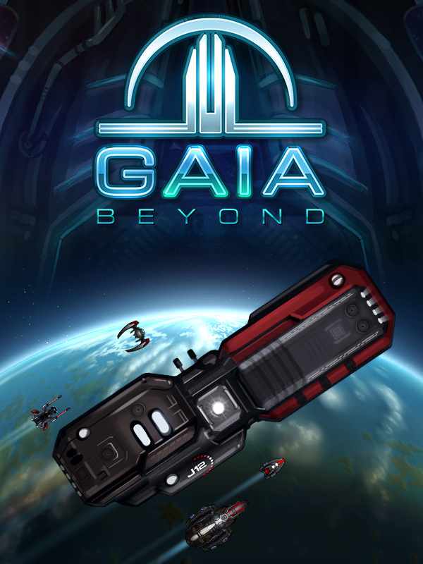

Gaia Beyond
Gaia Beyond
Details
|  | |
| Playtime | 14h 18m 0s |
| Last Activity | 2020-08-24 23:24:09 |
| Added | 2023-08-11 0:29:07 |
| Modified | 2025-10-02 9:32:51 |
| Completion Status | Completed |
| Library | Steam |
| Source | Steam |
| Platform | PC (Windows) |
| Release Date | 2020-08-20 |
| Community Score | 70 |
| Critic Score | |
| User Score | |
| Genre | Adventure Indie Role-playing (RPG) Simulator |
| Developer | Florian Richter, Tobias Offermanns, Devendra Pohly |
| Publisher | Florian Richter, Tobias Offermanns, Devendra Pohly |
| Feature | Single Player |
| Links | Steam Official Website YouTube Twitch |
| Tag | 2D Action RPG Adventure Choices Matter Conspiracy Exploration Indie Lore-Rich Mars Mining Open World Physics RPG Sci-fi Simulation Space Space Sim Story Rich Top-Down Trading |
Description

Gaia Beyond is a handcrafted 2D Action-RPG, an exploration mix built around fighting, mining and trading.
Your decisions are footprints...
within a vast non-linear solar system. Forge alliances among numerous factions and develop relations with hundreds of NPCs. Focus on trading and personal interaction or embark on science missions – hunt down pirates and collect their bounty. Infiltrate dubious factions and uncover secret plots and dark menaces.
- Explore an immersive and dynamic real-time solar system - two centuries after the devastation of Earth
- Dive into the Caduceus storyline with 10 missions and discover the truth behind the Ganymede Flu
- Enjoy hand-drawn graphics in 4K resolution
- Original soundtrack by Miguel Johnson
- Find and master over 100 individual sidequests
- Choices do matter - beware the consequences! Decide the fate of characters in the world
- Fight pirates, evil bosses, mutants and secret alien ships!
- Mine dozens of raw materials to craft or buy over 100 new spacecrafts
- Upgrade your ship with devices, shields and powerful weapons
- Discover a wide range of ship types, from shuttles to capital ships
- Hire and command mercenaries
- Constant expansion of storylines, sidequests, customizations, ships and features - prepare yourself!
To deliver a seamless and unique experience, we created our own engine - presenting a massive 2D Open World in realtime, with no loading times inbetween. Every part of the universe is alive and active at every moment.

There you are, human.
At the face of a habitable planet way outside the Kuiper Belt, inquiringly gazing at the same stars as the rest of the living species. Everyone? Doesn’t look like we will ever find out.
The past is shadowed by war. Generations of humanity have fought on the edge of survival. First against themselves – until technology started to rise, created to serve their innate greed for dominance. During Earth times, self-inflicted catastrophes kept humanity struggling and finally forced the big departure. And yet, here they are. Split up all over the solar system, living separate realities under various conditions.
Everything is different – and actually nothing ever really changed. A new mindset of unity, awoken by the end of the Machine War, is facing hard times. Beneath the curtain of false peace and hope, bad blood had always remained. Old and new enemies are rising again and humanity will have to face its greatest trial, yet. Will you be part of mankind's downfall or guide the system into a brighter future?
It's in your hands.

And then there's us
We love gaming and we always wanted to realize our own vision of a good game. Back in 2011, this project was started with the motivation to unify the "good old" mechanics that had been around for decades and give them a nice polish with today's visual and technical standards.
It was influenced by games like Fallout 1 + 2, Diablo, Grand Theft Auto, Baldur's Gate, Icewind Dale, Escape Velocity, Deus Ex & Co. Creating a game only half as good as those titles is a real challenge, but we will make the best effort to create something you'd enjoy!